***MIDI-UNIVERSE***
***MIDI-UNIVERSE***
***MIDI-UNIVERSE***
Home Products Setups Extra Contact
Here you will find some of the various controllers
we have designed and constructed over the years, ranging
from single octave 13 note boards to full AGO 32 note
organ pedalboards, all of different styles and with different
types added controls and customizations. All of our products
include standard MIDI functions including channel, program and
bank select. Links to the user manuals can also be found below
for selected models.
----- 25-Note Pedalboards -----
CX-25P Pedalboard:
25-note pedalboard with dual expression
and triple-switch control (rotor, etc)
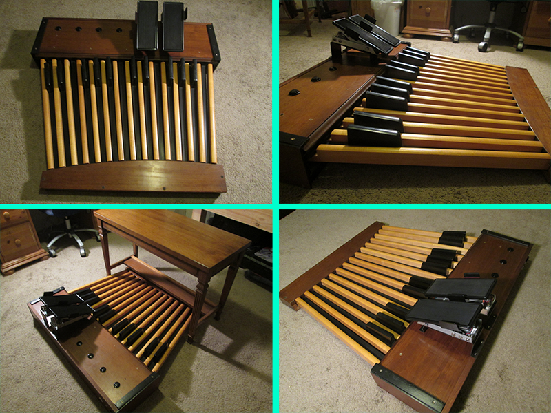
CX-25P User Manual
W-25 Pedalboard:
25-note pedalboard with expression
and switch (rotor control) input
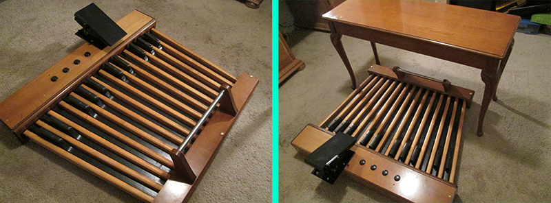
W-25 User Manual
C-25 Pedalboard:
25-note pedalboard with expression
and dual-switch input
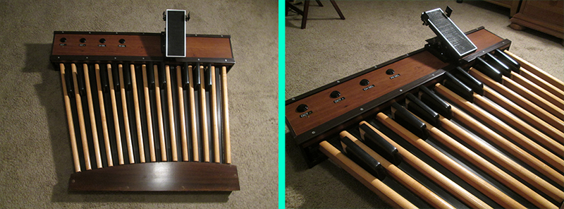
P-25 Pedalboard:
25-note pedalboard with expression
and switch (rotor control) input
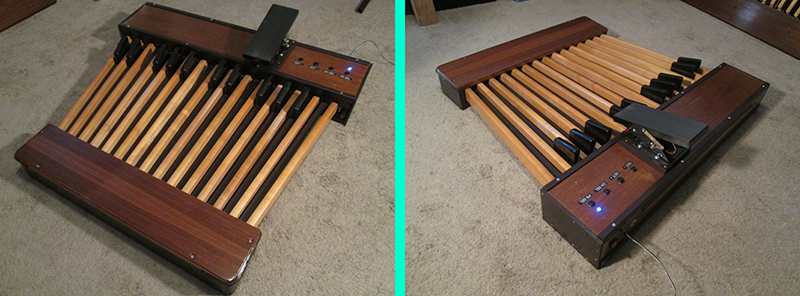
G-25 Pedalboard:
25-note pedalboard with expression
and switch (rotor control) input
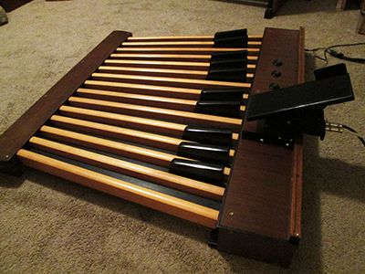
G-25 User Manual
----- 32-Note Pedalboards -----
XP32-PRO Pedalboard:
32-note 'princess style' pedalboard
with dual expression pedals
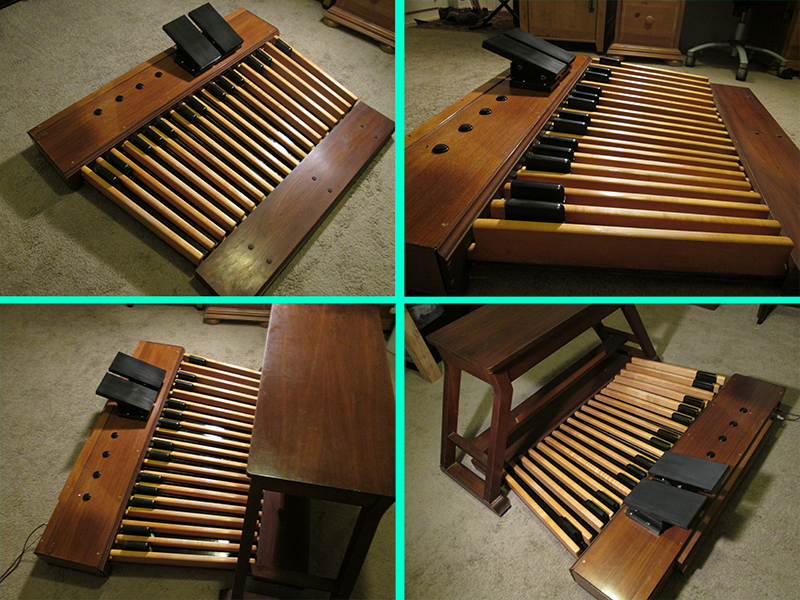
XP32-PRO User Manual
LX32-PRO Pedalboard:
32-note AGO standard pedalboard
with dual expression pedals
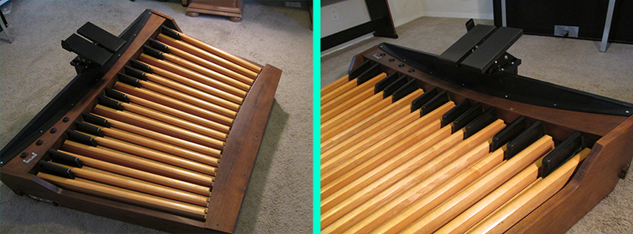
LX32-PRO User Manual
CX32-PRO Pedalboard:
32-note AGO standard pedalboard
with dual expression pedals
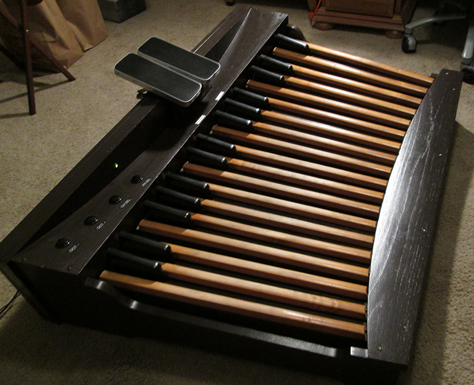
----- 13-Note Pedalboards -----
X13-PRO Pedalboard:
13-note standard pedalboard
with built in MIDI merge
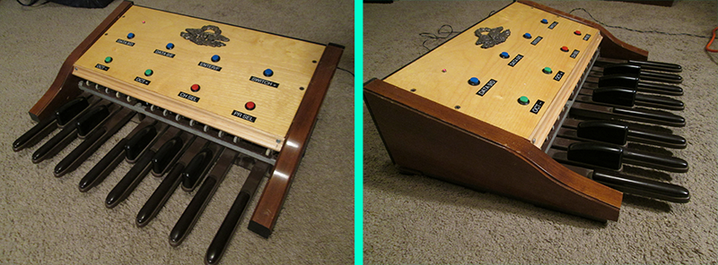
13-Note Shorty:
13-note non-standard pedalboard
with shortened pedals
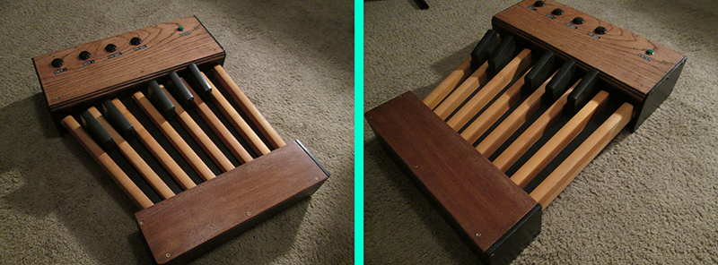
----- Custom Pedalboards -----
A18 Custom:
18-note pedalboard with custom range,
shortened pedalboard, and extra sustain output
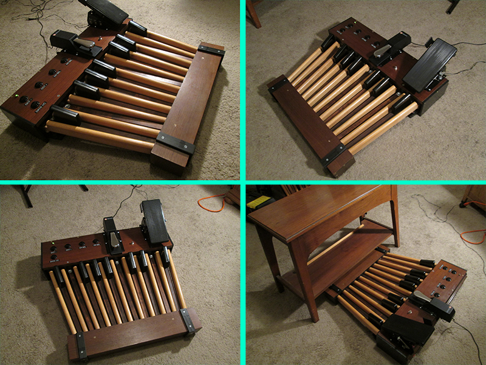